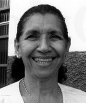

Ativa desde jovem nos movimentos estudantis, participou da Casa do Estudante do Norte Goiano (CENOG), lutando por acesso à educação gratuita e de qualidade. Este engajamento político se estendeu à luta pela criação do Estado do Tocantins, em articulação com nomes importantes da época, como Fabrício César Freire e Osvaldo Ayres da Silva. Formou-se em Letras pela Faculdade de Filosofia do Norte Goiano, em 1985, e pós-graduações em Administração e Supervisão Escolar, Metodologia do Ensino, Gestão em Educação e História da África e da Cultura Negra no Brasil, esta última pela Universidade Federal do Tocantins (UFT). Além da carreira educacional e política, Iara também se destacou como compositora e artista.
Foi vereadora em Porto Nacional e autora de leis em valorização das mulheres, como:
Recebeu, em 2008, a Comenda Francisco Ayres da Silva, como reconhecimento por sua trajetória educacional, política e cultural.
